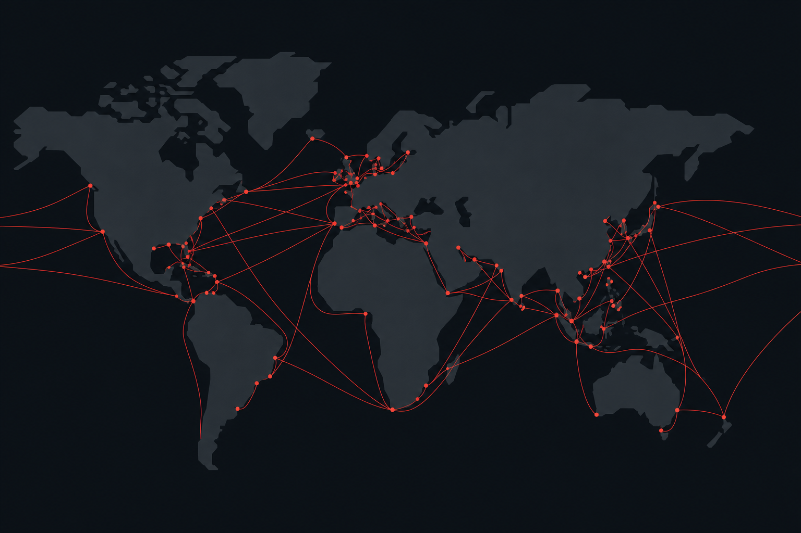
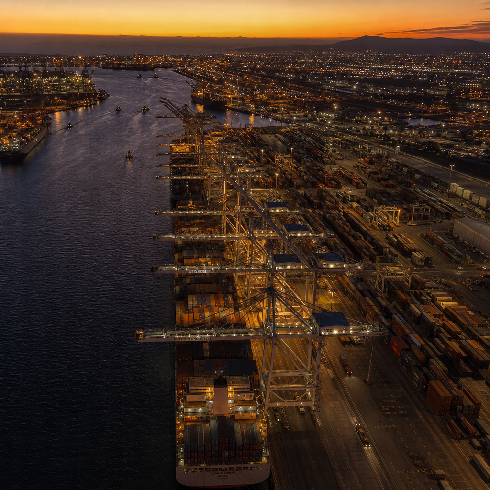

CNSHA
Shanghai
47.3M TEU throughput
2.8 day dwell time

47.3M TEU throughput
2.8 day dwell time
39.0M TEU throughput
1.9 day dwell time
14.5M TEU throughput
2.2 day dwell time

19.1M TEU throughput
3.4 day dwell time